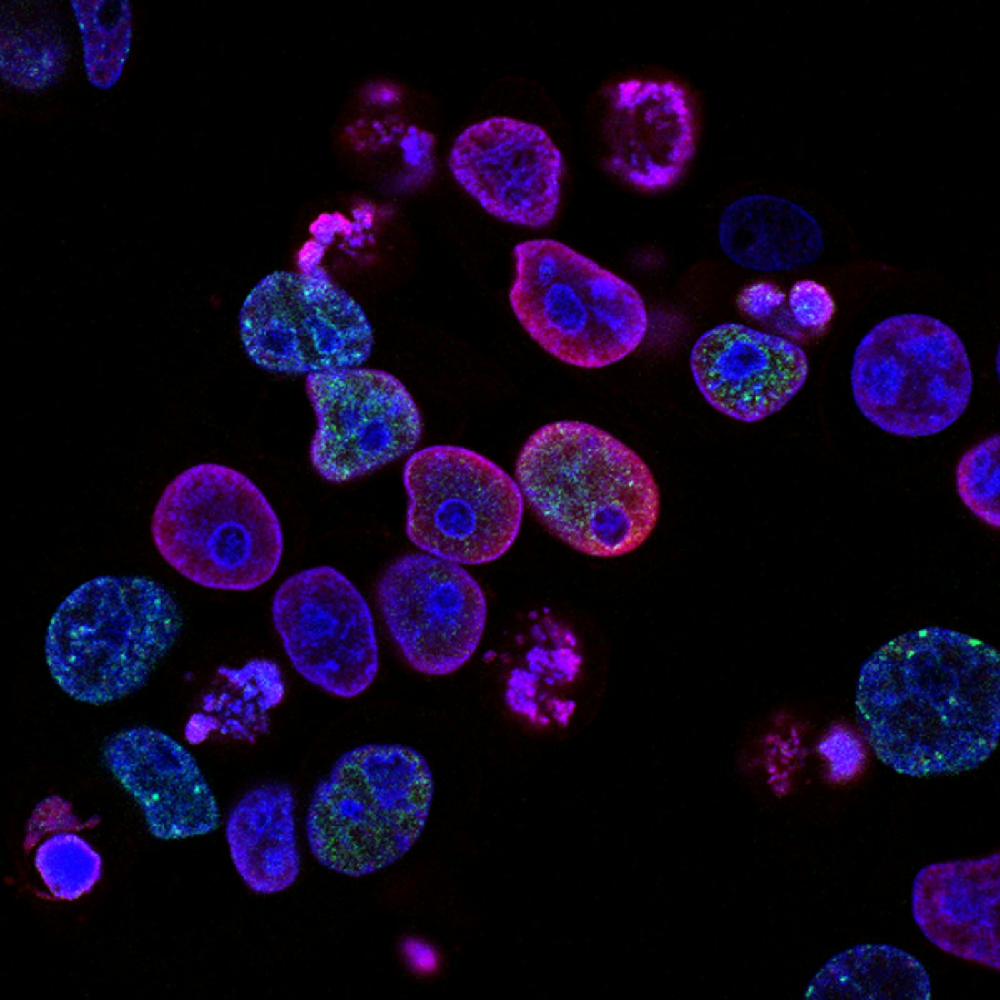

Data Collection
Gather structured healthcare data from multiple sources with accuracy and clear source tracking.
Crestanex helps healthcare organizations organize, validate, and manage high-quality healthcare data that supports research, clinical operations, and informed decision-making.

Accurate and well-structured healthcare data supports better clinical decisions, research quality, and operational efficiency.
Gather structured healthcare data from multiple sources with accuracy and clear source tracking.
Remove duplicate records, inconsistencies, and avoidable errors to improve overall quality.
Verify completeness, accuracy, and reliability through structured validation checks.
Organize information into consistent formats for seamless use across teams and systems.
We assist research teams with structured clinical trial data management that supports data quality, consistency, and regulatory readiness.
Organize research and study-related information securely and efficiently.
Prepare, manage, and maintain accurate CRF documentation.
Review and validate trial data for completeness and accuracy.
Produce timely reports for regulatory and internal use.
Organize clinical and operational data from diverse care settings into dependable datasets for research and decision-making.
Curate information from clinics, labs, imaging, and other real-world sources.
Structure outcome and observational data for meaningful analysis.
Combine diverse sources into unified, accessible datasets.
Prepare high-quality information that supports clearer decisions.
Support artificial intelligence and machine learning initiatives with clean, labeled, and model-ready healthcare data.
Organized registry data supports patient tracking, research, quality programs, and healthcare reporting over time.
Design structured registry databases around program and research requirements.
Keep registry information current, accurate, and consistently organized.
Continuously review quality and alignment with defined standards.
Generate practical reports and insights for better decisions.
Partner with Crestanex for dependable data management and curation solutions that support research, innovation, and better decision-making.